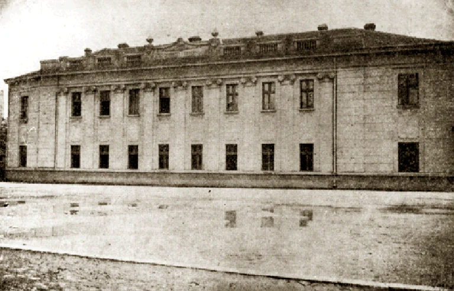
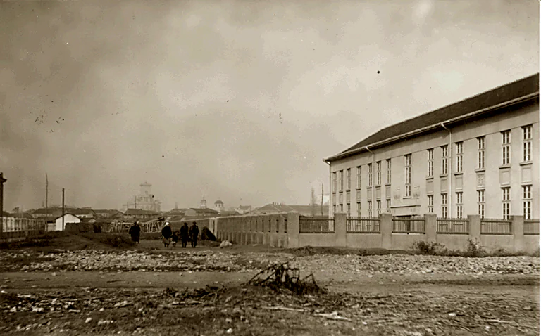
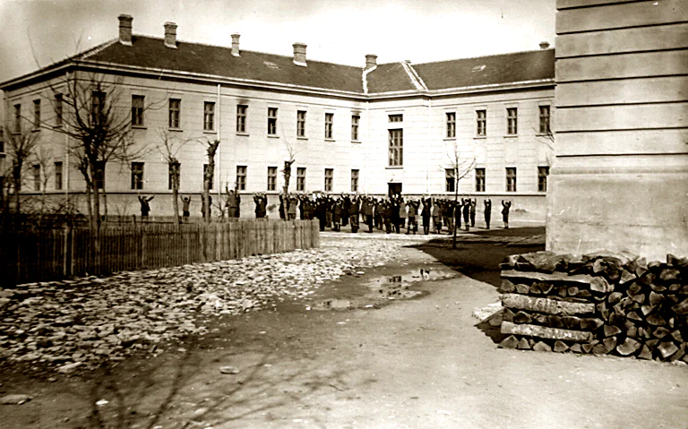
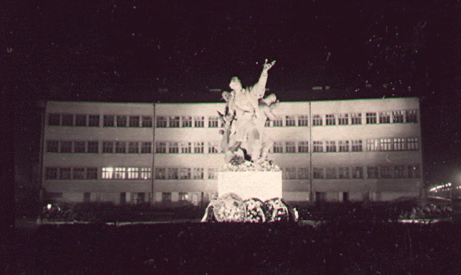

Filozofski fakultet
- Realizacija
- Kole Čašule, Blagoja Drnkov
- Godina
- 1947
- Trajanje
- 00:04

Srednja škola Idadija. Izgrađena krajem 19. stoljeća. Nastava je u njoj trajala osam godina, a mogli su je pohađati učenici svih vjeroispovijesti. Kasnije ta zgrada postaje Učiteljska škola, sve do potresa 1963. godine, u kojem je teško oštećena. Zbog toga je 1965. srušena, a kao spomen ostavljen je ulaz zgrade s četiri stupa. Do danas Skopljani to područje zovu Idadija. U pozadini je škola za umjetnosti i obrte.

Učiteljska škola (1920-ih)

Dio gradskog parka sa zgradom obrtničke škole. (1920-ih)

Zgrada srednje škole Idadija, a nakon Drugoga svjetskog rata „Učiteljske škole“, koja je razrušena u katastrofalnom potresu 26. srpnja 1963. godine.

Umjetničko-obrtnička škola, izgrađena krajem 19. stoljeća. Nalazila se u neposrednoj blizini Učiteljske škole. U potresu 1963. godine znatno je oštećena, zbog čega je srušena.

Skopsko sveučilište 1920. godine na keju Vardara. U njemu je bio smješten Filozofski fakultet kao dio Beogradskog sveučilišta.

Skopsko sveučilište 1920. godine na keju Vardara. U njemu je bio smješten Filozofski fakultet kao dio Beogradskog sveučilišta.

Dvorišna zgrada muške gimnazije. (1912. godina)

Skopska muška gimnazija, izgrađena 1902. - 1904. godine. Odlikuje se neoklasičnim elementima. U prednjem planu je ulica „Poincaré“, kasnije „Lenjingradska“.

Muška gimnazija, izgrađena 1902. godine.

Velika medresa, u Ilindenskoj ulici (1920-ih)

Osnovna škola „Sv. Bogorodica“ - 1920-ih.

Osnovna škola „Jovan Skerlić“ - 1920-ih.

Treća narodna osnovna škola (1920-ih)

Srpsko-židovska osnovna škola u Židovskoj mahali.
(kraj 19. stoljeća)

Osnovna škola „Đura Jakšić“ (1920-ih)

Narodna osnovna škola „Kraljica Marija“ - 1920-ih.

Osnovna škola „Car Dušan“, uz zgradu Macura na gradskom trgu - 1920-ih.
Osnovna škola „Car Dušan“, uz zgradu Macura na gradskom trgu - 1920-ih.

Osnovna škola „Branko Radičević“ - 1920-ih.

Narodna škola „Ljuba Kovačević“ - 1920-ih.

Narodna škola „Vladimir Karić“ - 1920-ih.

Narodna škola „Dositej Obradović“, u mahali Sauk česma - Čair - 1920-ih.

Osnovna škola „Vuk Stefanović Karadžić“ - 1920-ih.

Narodna škola „Mehmed Sokolović“ - 1920-ih.

Narodna škola „Osman Džikić“ - 1920-ih.

Trgovačka akademija - 1920-ih.

Trgovačka akademija - 1920-ih.

Dvorište muške gimnazije - 1920-ih.

Nova zgrada osnovne škole „Dositej Obradović“, izgrađena 1930-ih.

Osnovna škola „Goce Delčev“. (snimljeno 1934. godine)

Osnovna škola „Goce Delčev“. (snimljeno oko 1950. godine)

Ženska gimnazija - noću. U prednjem planu je spomenik osloboditeljima Skoplja. (oko 1950-ih)

Ženska gimnazija, izgrađena 1930-ih, a fotografija je iz 1950-ih. Ispred zgrade je spomenik „Osloboditeljima Skoplja“

Prirodoslovno-matematički fakultet - 1950-ih

Osnovna škola „11. listopada“ - 1960-ih

Tehnički fakultet - 1960-ih

Filmski pregled br. 10
 Akvadukt4 razglednice
Akvadukt4 razglednice Kale30 razglednica
Kale30 razglednica Mostovi60 razglednica
Mostovi60 razglednica Kej58 razglednica
Kej58 razglednica Trg46 razglednica
Trg46 razglednica Građevine66 razglednica
Građevine66 razglednica Kršćanski hramovi19 razglednica
Kršćanski hramovi19 razglednica Muslimanske građevine33 razglednice
Muslimanske građevine33 razglednice Časnički dom29 razglednica
Časnički dom29 razglednica Kazalište28 razglednica
Kazalište28 razglednica Željeznički kolodvor13 razglednica
Željeznički kolodvor13 razglednica Škole36 razglednica
Škole36 razglednica Parkovi12 razglednica
Parkovi12 razglednica Tržnice18 razglednica
Tržnice18 razglednica Ulice38 razglednica
Ulice38 razglednica Panorama I60 razglednica
Panorama I60 razglednica Panorama II30 razglednica
Panorama II30 razglednica Kolaži55 razglednica
Kolaži55 razglednica Poplave9 razglednica
Poplave9 razglednica Potres27 razglednica
Potres27 razglednica Skoplje 2000.26 razglednica
Skoplje 2000.26 razglednica